Gallery
1977
Outkids
9 photos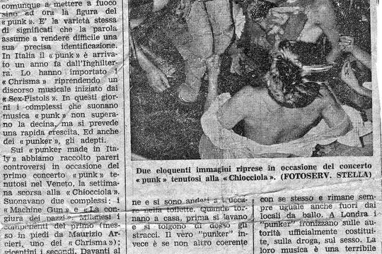
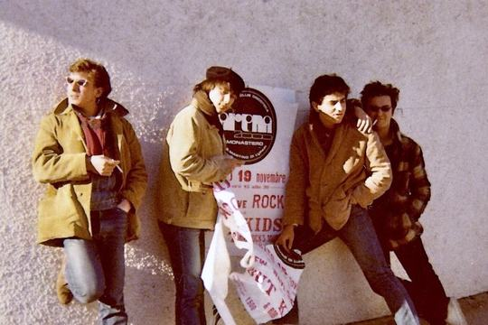
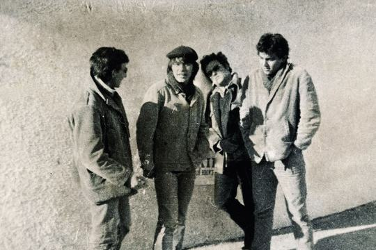
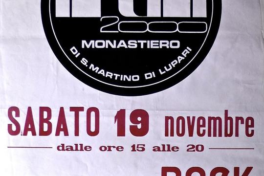
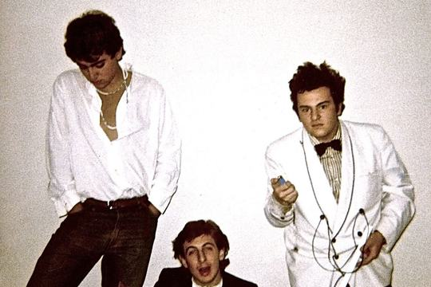
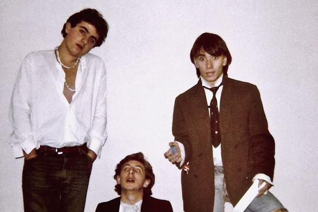
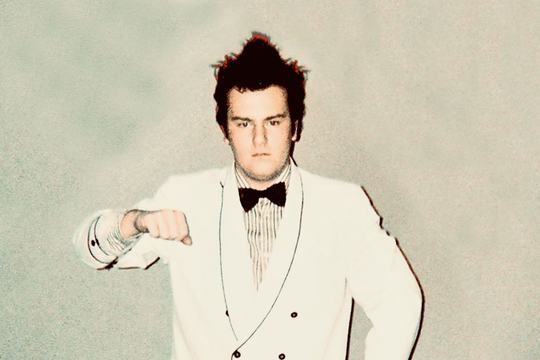
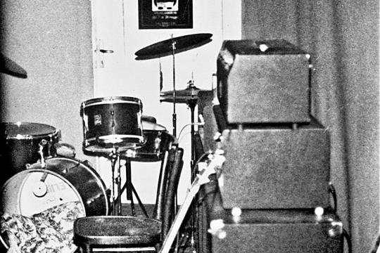
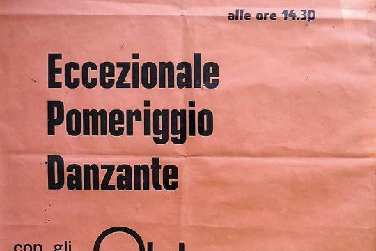
The same day: listen and watch
Outkids session · October 19773 tracks
- Try again1:11
- You are yours4:28
- Gimme gimme shock treatment1:02
1979
Outkids 2
21 photos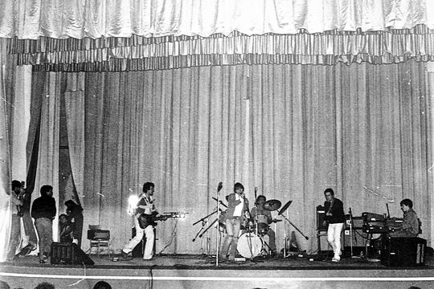
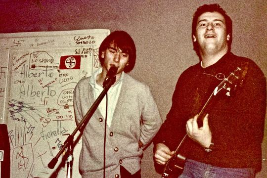
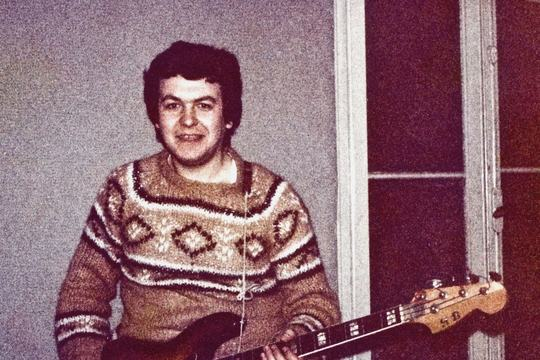
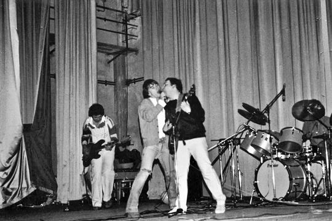
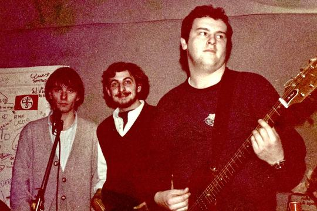
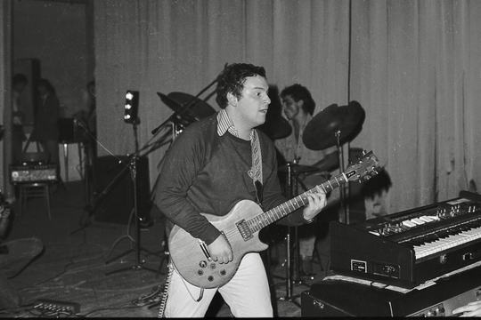
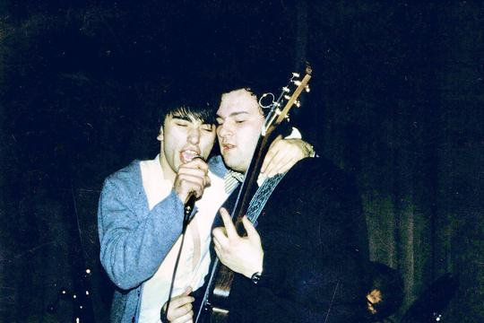
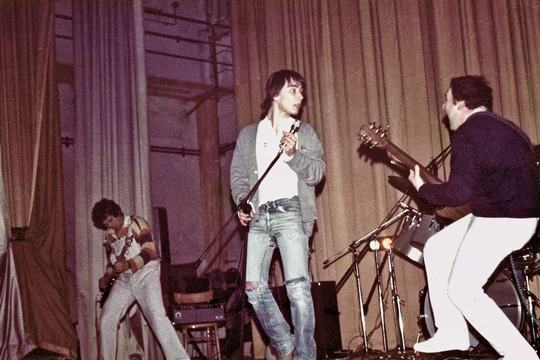
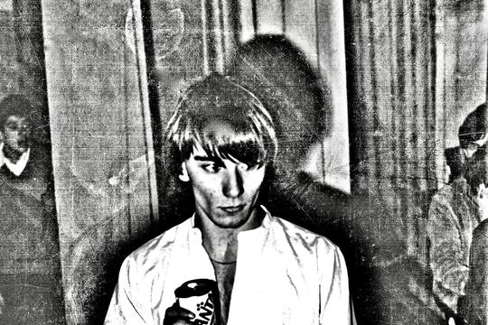
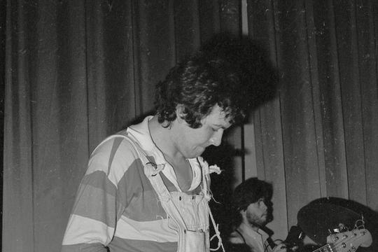
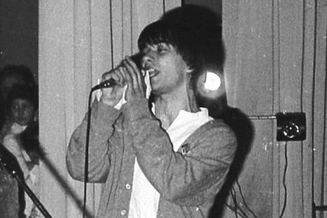
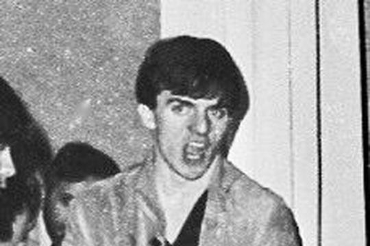
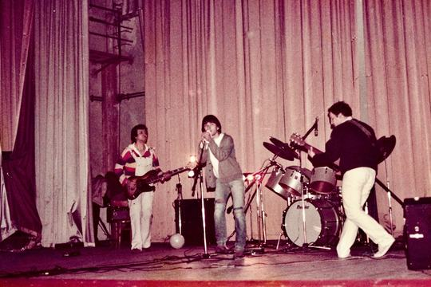
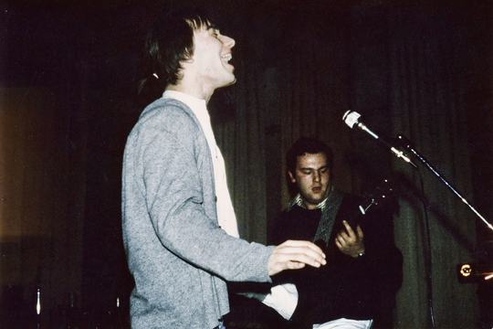
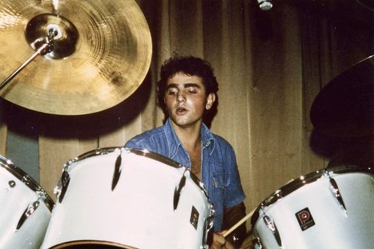
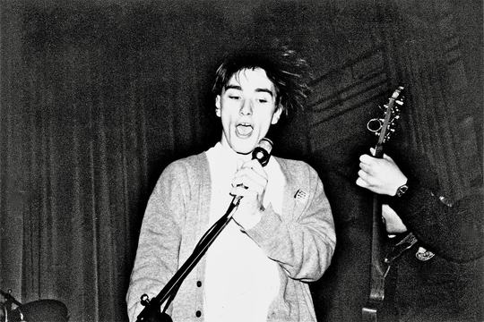
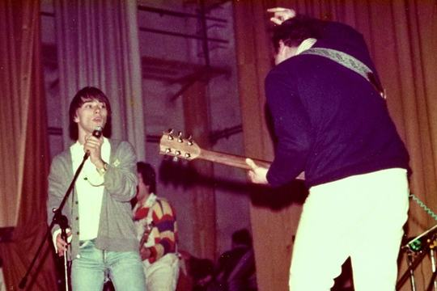
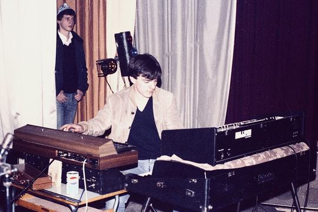
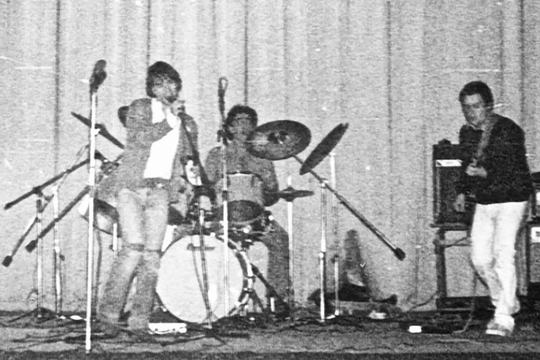
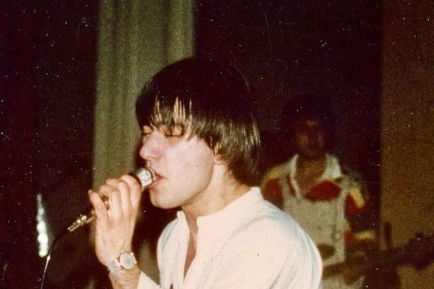
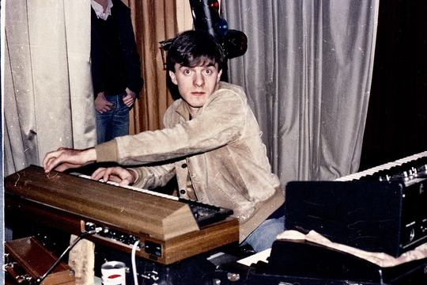
The same day: listen and watch
Live at Teatro Remondini · February 19792 tracks
- I'm faster5:28
- This days '781:46
Trash (Roxy)
13 photos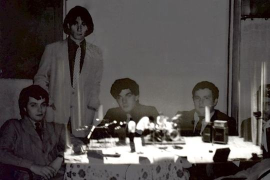
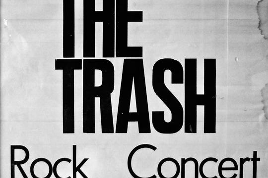
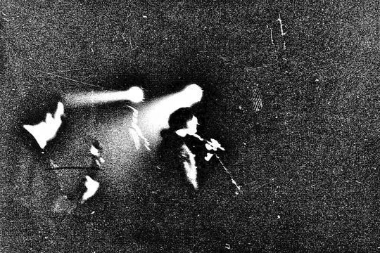
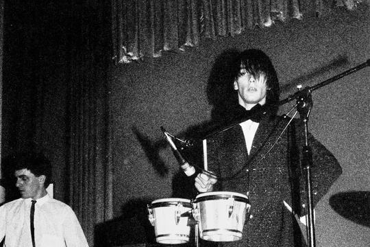
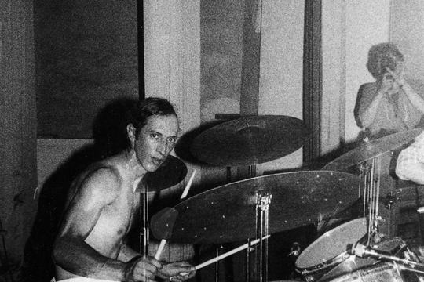
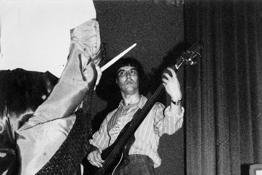
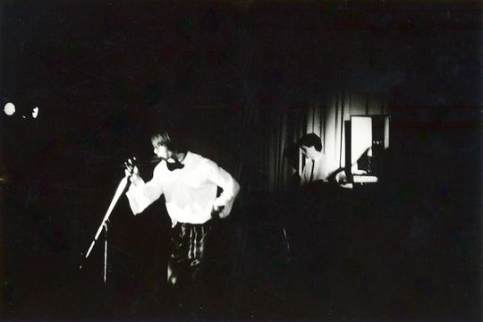
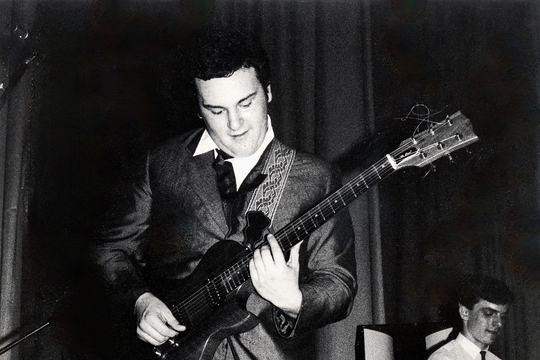
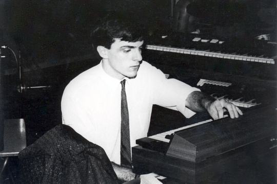
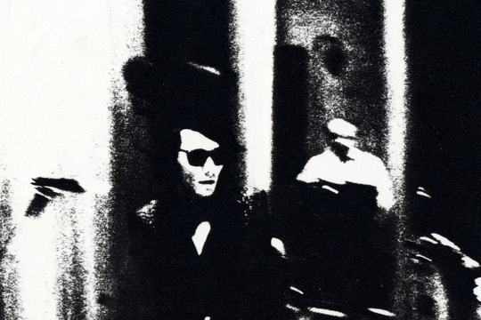
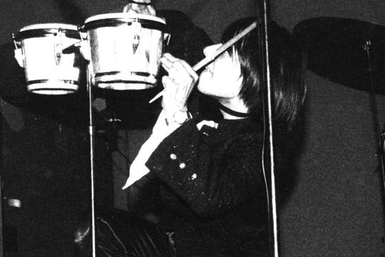
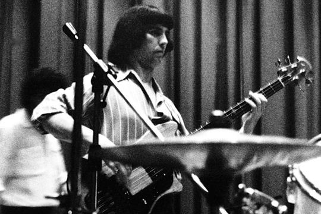
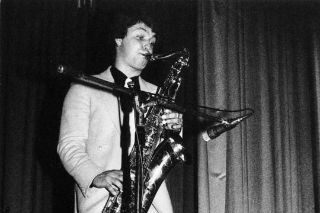
The same day: listen and watch
Roxy session, studio live · 20 May 19791 tracks
- Do the strand3:52
1980
Trash
6 photos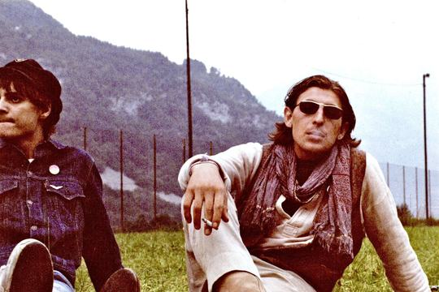
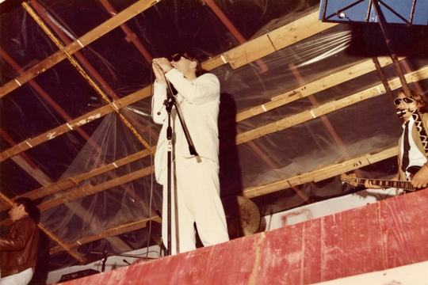
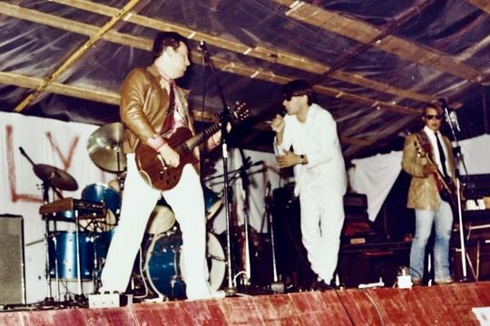
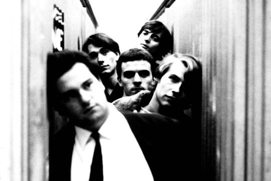
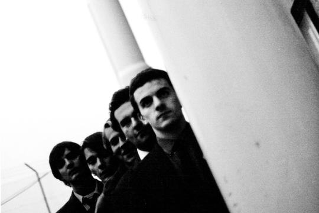
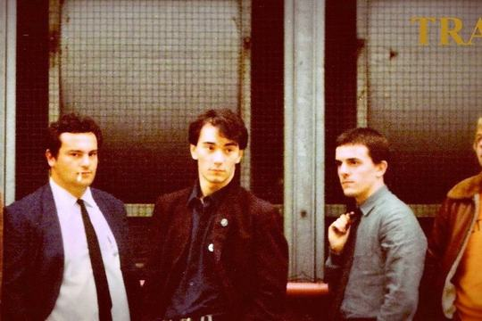
The same day: listen and watch
Live in Longarone · 19 July 19802 tracks
- A new direction2:17
- Speedball2:12
FT Studio · The Cock Demo Recording Session
8 photos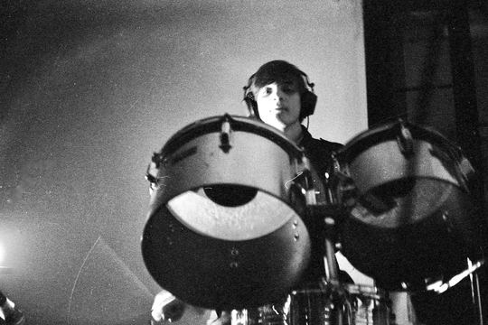
The same day: listen and watch
The Cock demo, recording session · October 19805 tracks
- I'm faster3:12
- Anytime you dress so fine (Steve vocal)3:20
- Calling (Trashvolution)2:38
- False eyelashes3:11
- The Modern4:06
1981
Studio
8 photosTRASH (Feat. FRIGIDAIRE TANGO) · Modern's club
11 photosThe same day: listen and watch
Live at Modern's club · 12 June 19812 tracks
- I'm faster6:04
- Black curtains3:08
Button Studio · The Cock Recording Session
12 photosThe same day: listen and watch
Button Studio, The Cock session (instrumental versions) · April 198113 tracks
- Dangerous echo (inst.)3:27
- A good cure (inst.)1:52
- Blue & pink (Inst.)6:33
- Push (inst.)2:08
- A citizen came (inst.)3:06
- I'm faster4:49
- Black curtains (inst.)4:53
- Nothing more (inst.)2:02
- Tell me sometimes (inst.)2:13
- Brain rock (inst.)2:53
- Don't kill time (Inst.)7:09
- The modern (inst.)3:31
- Frigidaire Tango (inst.)4:46
Studio live · November 19818 tracks
- Recall (1st version, inst.)5:32
- The Tiger (inst.)3:07
- Brain rock3:01
- Anytime you dress so fine3:32
- Blue & pink4:54
- Nothing more2:18
- Dangerous echo3:43
- Push2:18
Bassano (VI) · Carrozzeria Casale
15 photos1982
Limena (PD) · Boomerang Discoteque
1 photoThe same day: listen and watch
Live at Boomerang · 8 January 19827 tracks
- I'm Faster4:15
- Black Curtains4:42
- Nothing More2:17
- Dangerous Echo3:12
- A Citizen Came4:34
- Push2:53
- Frigidaire Tango5:47
SPRAY · Bassano (VI) · Modern's club
7 photosThe same day: listen and watch
Live at Modern's club · 2 April 1982 (S.P.R.A.Y. / Twist 92)3 tracks
- Beyond all beliefs6:08
- Greylights in the emptyness4:58
- Angry Lucinda (short)3:13
Bassano (VI) · Teatro Remondini
24 photosThe same day: listen and watch
Live at Teatro Remondini · 26 June 19823 tracks
- I'm faster5:32
- Blue & Pink5:33
- Push2:35
Cadoneghe (PD) · Parco della Castagnara
14 photosThe same day: listen and watch
Live in Cadoneghe · 8 July 19822 tracks
- Anytime you dress so fine (long version)4:37
- This days '782:39
Thiene (VI) · Cinema Luna
8 photosThe same day: listen and watch
Live at Cinema Luna · 6 October 19822 tracks
- This days '782:56
- Vanity fair (inst., long version)9:07
Firenze · Manila Club
12 photosThe same day: listen and watch
Live at Manila Club · 3 December 19821 tracks
- Shout yourself to death10:54
Feltre (BL) · Palestra Comunale
6 photosThe same day: listen and watch
Live in Feltre · 18 December 19822 tracks
- Dazed life6:23
- Shout yourself to death (inst.)6:56
1983
Marghera (VE) · Teatro Ariston
17 photosThe same day: listen and watch
Live at Teatro Ariston · January 19832 tracks
- Dazed life5:15
- Recall5:24
Ceccon photosession
16 photosThe same day: listen and watch
From the Ceccon session · 19831 tracks
- Presage2:00
Nove (VI) · Palestra Comunale
12 photosThe same day: listen and watch
Live in Nove · 16 February 19832 tracks
- I'm faster4:45
- Vanity fair3:42
Frigidaire Tango & The Sound · Shindy Club
4 photosThe same day: listen and watch
With The Sound · 16 February 19831 tracks
- I'm waiting for the man0:35
Fiorenzuola D'Arda (PI) · My Way
5 photosThe same day: listen and watch
Live at My Way · 28 October 19831 tracks
- Russian dolls7:11
Bassano (VI) · Teatro Remondini
23 photos1984
Rimini (FO) · Slego
10 photosThe same day: listen and watch
Live at Slego · 6 January 19846 tracks
- Frigidance6:08
- The Cock Medley6:37
- Russian dolls11:53
- Dazed life4:54
- Recall5:48
- Dangerous echo3:30
Belvedere di Tezze (VI) · Sporting Club
3 photosThe same day: listen and watch
Live at Sporting Club · 14 January 19842 tracks
- Presage4:34
- Vanity fair4:32
Torino · Big Club
10 photosSpinea (VE) · Cinema Bersaglieri
20 photosThe same day: listen and watch
Live at Cinema Bersaglieri · 24 March 19844 tracks
- Healthy2:30
- Presage4:51
- Recall5:27
- The Cock medley6:35
Padova · Teatro Pio X
8 photosThe same day: listen and watch
Live at Teatro Pio X · 12 May 19843 tracks
- Blue Buildings / Frigidance4:41
- Insecurity2:11
- Russian dolls8:40
1985
Crushers (post FT) · Bassano (VI) · Cinema Grotta
16 photosThe same day: listen and watch
Live at Cinema Grotta · 19 April 19851 tracks
- Thousand Sinners3:33
Montebelluna (TV) · Palasport
40 photosThe same day: listen and watch
Live at Montebelluna Palasport · 21 September 19852 tracks
- Insecurity2:23
- Tiny Girls / Frigidance9:21
Barcelona (SPA) · Bikini Club
6 photosThe same day: listen and watch
Live at Bikini Club · 16 November 19852 tracks
- Cold furs3:53
- Insecurity2:15
Mirano (VE) · Taxi Club
14 photos